Diseño de material de estudio · W. Alexander Flórez
Fundamentación en Física · Capítulo 0
De las galaxias a los campos cuánticos: de qué está hecho el universo, cómo lo sabemos y con qué constantes lo medimos.
Diego Restrepo · Instituto de Física · Universidad de Antioquia
bit.ly/estructuradelamateriaudea
→ diapositiva siguiente · ↑↓ pasos dentro de la diapositiva · espacio todo en orden · F pantalla completa
§ 0.1 · El universo
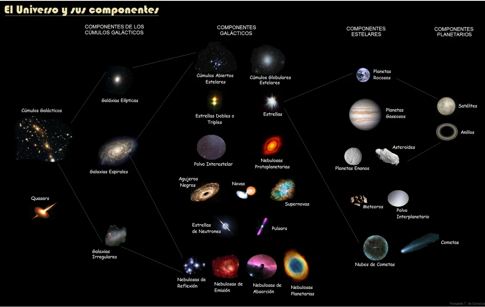
Aclaración. Esta parte del curso, hasta donde comienza relatividad, es informativa: varios de sus temas se desarrollan con detalle más adelante.
La gravedad liga planetas a estrellas, estrellas a galaxias y galaxias a cúmulos.
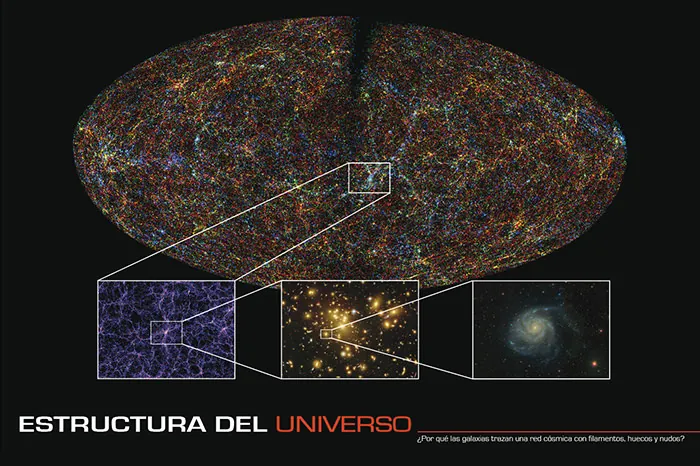
La gravedad organiza el universo en planetas, estrellas, galaxias y cúmulos.
§ 0.1 · Escalas
Arriba manda la gravedad; en átomos y moléculas, el electromagnetismo; dentro del núcleo, las fuerzas nucleares.
Del protón al universo observable hay 42 potencias de diez.
§ 0.1 · Historia del universo
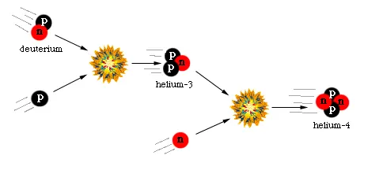
Nucleosíntesis primordial. En los primeros minutos, protones y neutrones se fusionan en deuterio, helio-3 y helio-4: el universo queda con cerca de 75 % de hidrógeno y 25 % de helio en masa. Fuente
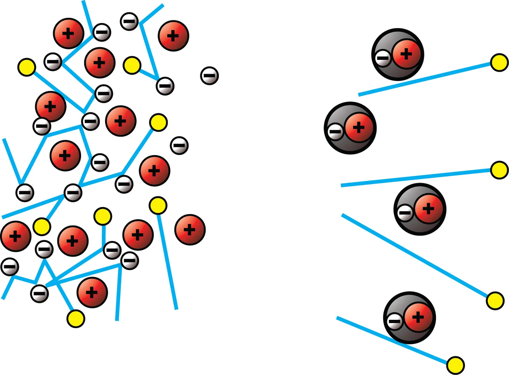
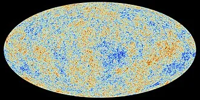
Recombinación. A unos \(\qty{3000}{K}\) los electrones se ligan a los núcleos: el universo se vuelve transparente. Esa luz, estirada por la expansión, es hoy el fondo cósmico de microondas a \(\qty{2{,}725}{K}\). Fuente
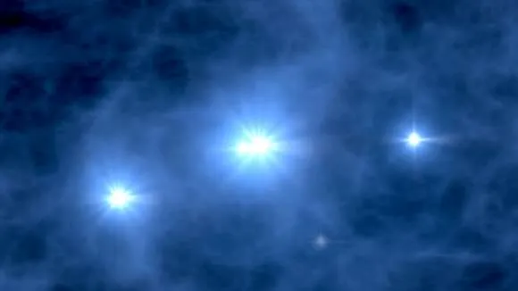
Primeras estrellas. La gravedad junta el gas en nubes que se encienden; en su interior se fabrican carbono, oxígeno, hierro… Fuente
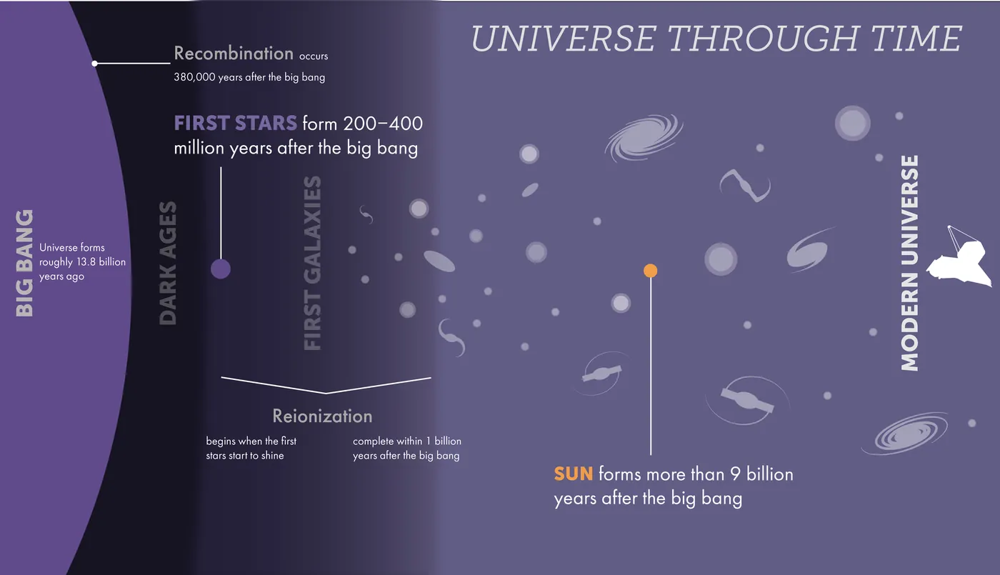
Hoy, 13 800 millones de años después: galaxias por todas partes, y un Sol que se formó más de 9000 millones de años después del big bang. Fuente
| Contenido del universo observable | Número |
|---|---|
| Protones | \(\sim 10^{80}\) |
| Electrones | \(\sim 10^{80}\) |
| Fotones | \(\sim 10^{90}\) |
| Neutrinos | \(\sim 10^{90}\) |
Por cada protón hay del orden de mil millones de fotones y otros tantos neutrinos: la materia ordinaria es una minoría.
Al enfriarse, el universo formó núcleos, luego átomos y después estrellas.
§ 0.1 · Expansión
Hubble (1929): la luz de las galaxias lejanas llega corrida al rojo; cuanto más lejos, más rápido se alejan.
\(\qty{1}{Mpc}\) (megapársec) \(\approx 3{,}26\) millones de años luz.
No hay centro: desde cualquier galaxia se ve a las demás alejarse, como las pasas de un pan que se hornea.
Si todo se aleja, antes todo estuvo junto: \(1/H_0 \approx 14\,000\) millones de años, cerca de la edad del universo: 13 800 millones de años.
Todas las galaxias se alejan de todas: el espacio mismo se expande.
§ 0.1 · Materia oscura
Puntos: mediciones típicas de una galaxia espiral (esquemáticas). Línea punteada: solo la materia que vemos; línea azul: con el halo.
Una estrella en órbita cumple \(v^{2} = G\,M(r)/r\). Si casi toda la masa estuviera en las estrellas y el gas que vemos, lejos del centro \(v\) debería caer como en el sistema solar.
Vera Rubin (años 70): la rapidez se queda constante. Hay unas cinco veces más masa de la que brilla.
Otras pistas: cúmulos de galaxias (Zwicky, 1933), lentes gravitacionales y el fondo cósmico de microondas. La materia oscura no emite luz y no está hecha de protones ni neutrones.
¿De qué está hecha? Nadie lo sabe todavía: es una de las grandes preguntas abiertas.
Las galaxias tienen unas cinco veces más masa de la que brilla.
§ 0.1 · Contenido del universo
Energía oscura: en 1998 se descubrió, con supernovas lejanas, que la expansión del universo se está acelerando (Nobel 2011). Algo llena el espacio vacío y lo empuja.
Todo lo que vemos (estrellas, planetas, gas, nosotros) es menos del 5 %. Las estrellas solas son apenas un 0,5 %.
Valores del satélite Planck (2018), que midió el fondo cósmico de microondas.
Lo que conocemos es solo el 5 % del contenido del universo.
§ 0.1 · Mensajeros: la luz
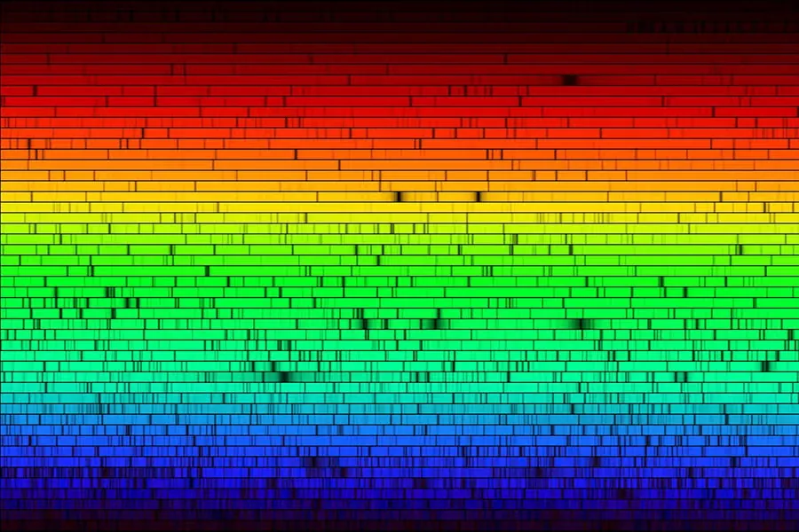
Las líneas oscuras del espectro revelan de qué están hechas las estrellas.
§ 0.1 · Mensajeros: el espacio-tiempo
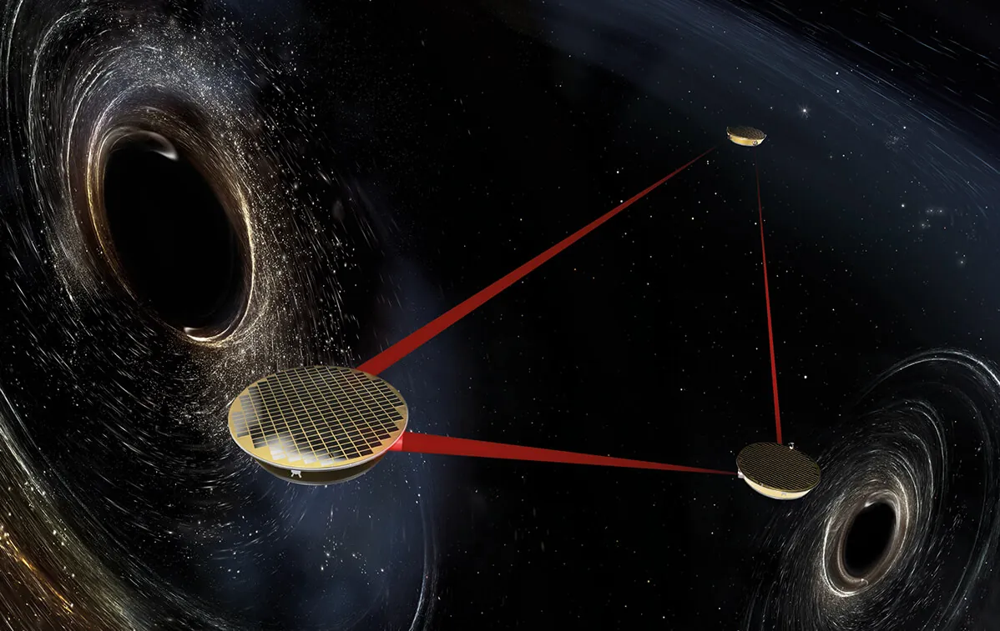
Las ondas gravitacionales son un nuevo mensajero: el espacio-tiempo vibra.
§ 0.2 · Campos
«¿Qué es una partícula?» Dos respuestas modernas: una excitación cuántica de un campo y una representación irreducible de un grupo. Quanta Magazine
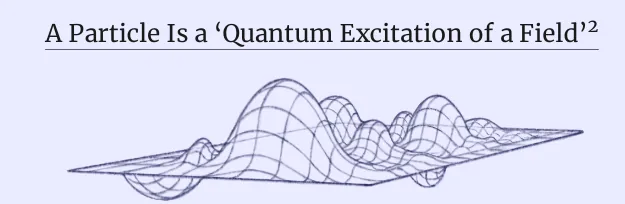
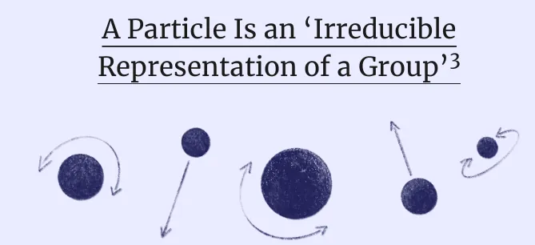
Un campo llena el espacio; sus excitaciones son las partículas.
§ 0.2 · Superconductividad
Temperaturas críticas: Al \(\qty{1{,}2}{K}\), Hg \(\qty{4{,}2}{K}\), Sn \(\qty{3{,}7}{K}\), Pb \(\qty{7{,}2}{K}\), \(\mathrm{YBa_2Cu_3O_7}\) \(\qty{92}{K}\) (¡por encima del nitrógeno líquido!).
Bajo su temperatura crítica, un superconductor no tiene resistencia y expulsa el campo.
§ 0.2 · Superconductividad
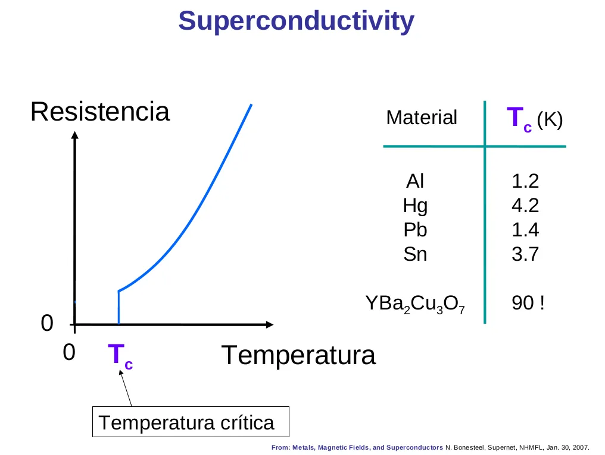
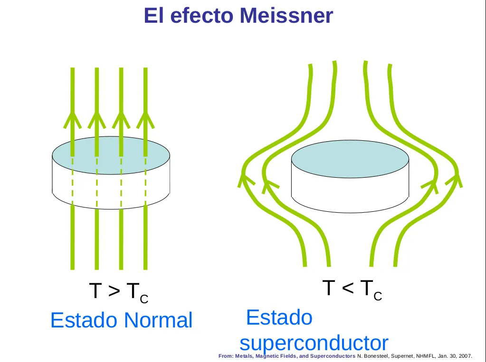
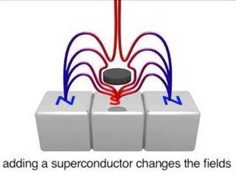
El campo magnético no puede estar donde está el superconductor: los campos ocupan sitio.
§ 0.2 · Campos de materia
Así como el campo electromagnético tiene excitaciones de energía definida, los fotones, los demás objetos materiales se entienden hoy como excitaciones de campos específicos: literalmente campos complejos (en algunos límites sus excitaciones se describen como partículas).
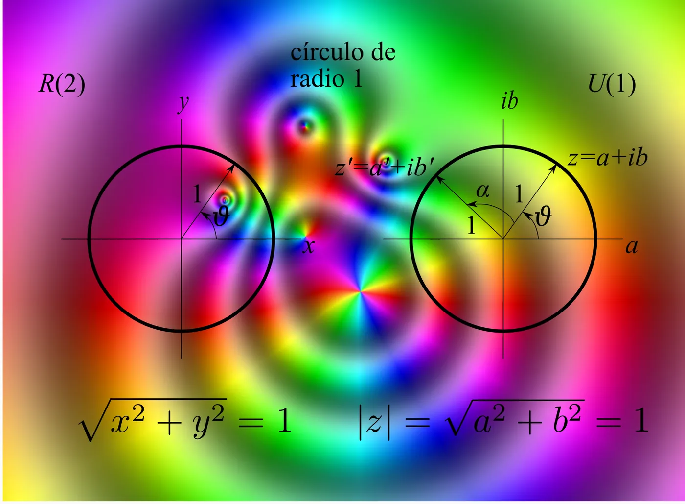
Los campos de la materia son complejos: multiplicar por i es girar un cuarto de vuelta.
§ 0.2 · Los campos son cuánticos
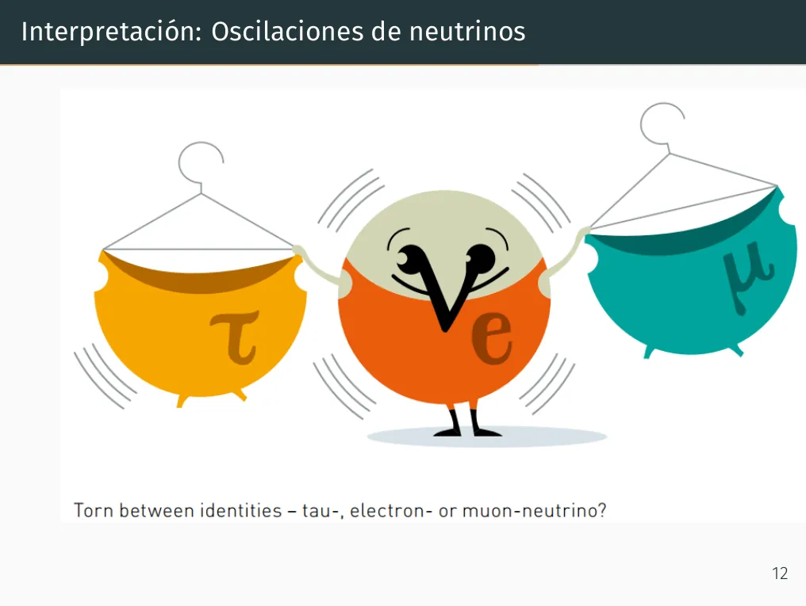
El campo de neutrino exhibe siempre su comportamiento cuántico (oscila entre sabores) y viaja prácticamente a la velocidad de la luz
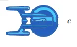
.Aún no hay un experimento donde sus excitaciones se describan como partículas en reposo: su masa no se ha medido directamente.
La probabilidad de cambiar de sabor depende de la distancia recorrida dividida por la energía, \(L/E\). (la fórmula)
Los neutrinos cambian de sabor al viajar: prueba de que tienen masa.
§ 0.2 · Universo observable
| Campo | Número de excitaciones |
|---|---|
| Electromagnético (fotones) | \(10^{90}\) |
| De neutrino* | \(\lesssim 10^{90}\) |
| Bariónico (protones y neutrones) | \(10^{80}\) |
| Electrónico | \(10^{80}\) |
* La suma de las masas de todos los neutrinos del universo observable iguala aproximadamente la masa de todas sus estrellas.
Los neutrinos son las partículas más numerosas después de los fotones, y mucho más numerosas que cualquier otro tipo de partícula.
El campo electromagnético y el de neutrinos tienen mucho en común: sus excitaciones viajan a (casi) la velocidad de la luz y llenan todo el universo.
Después de los fotones, los neutrinos son las partículas más numerosas.
§ 0.2 · El Sol
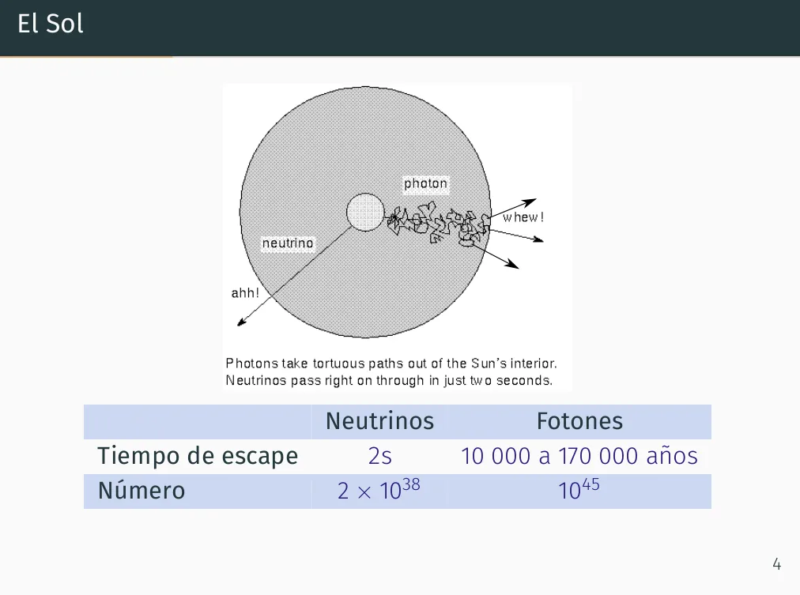
| Neutrinos | Fotones | |
|---|---|---|
| Tiempo de escape | \(\qty{2}{s}\) | \(10\,000\) a \(170\,000\) años |
| Emitidos por segundo | \(2\times 10^{38}\) | \(10^{45}\) |
\(R_\odot = \qty{6{,}96\times 10^{8}}{m}\). Tras \(N\) pasos al azar de longitud \(\ell\), el fotón se aleja solo \(\sqrt{N}\,\ell\).
Un neutrino sale del Sol en 2 segundos; un fotón tarda miles de años.
§ 0.3 · Átomos
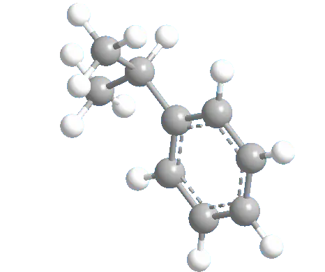
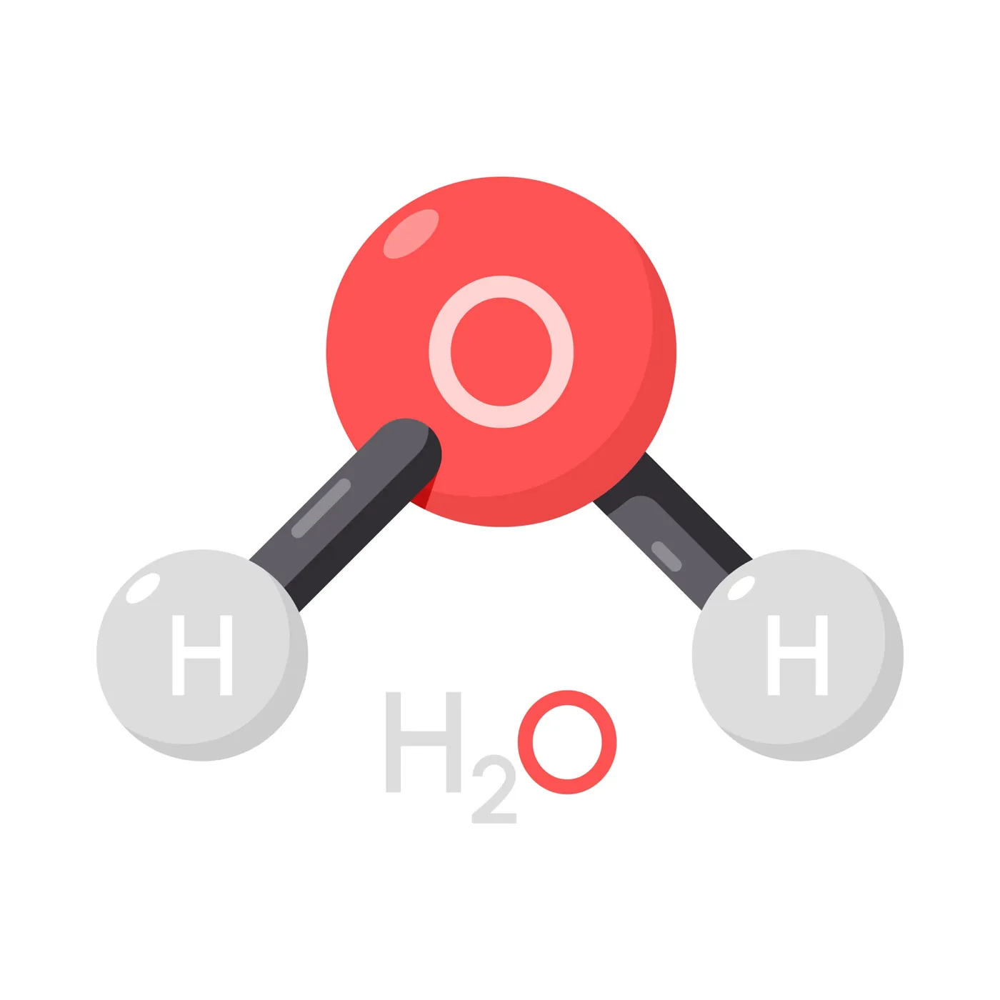
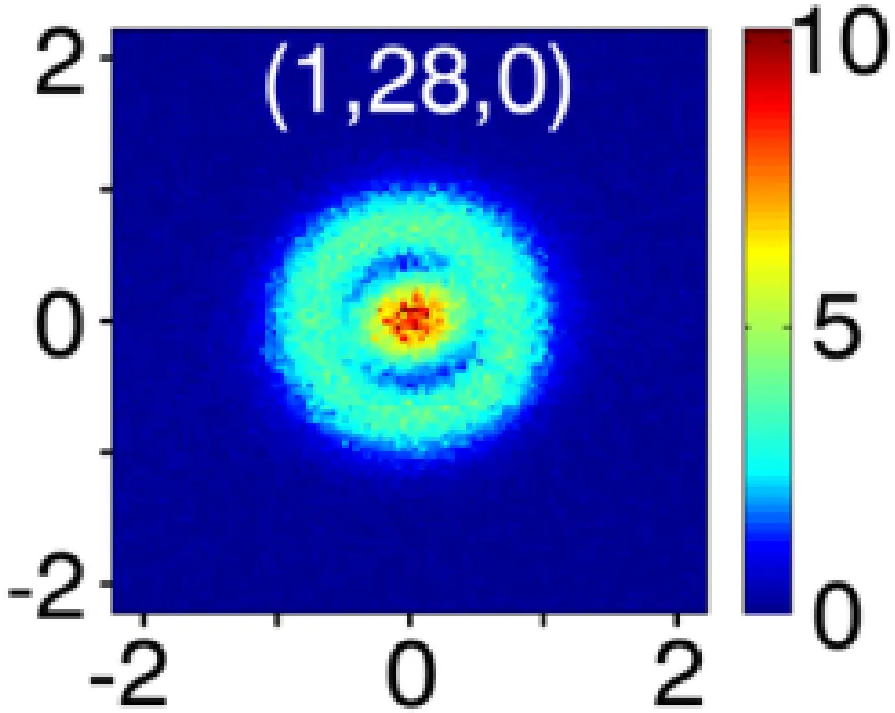
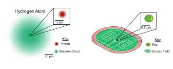
El espacio subatómico es prácticamente vacío: el átomo de hidrógeno (\(\approx \qty{1{,}06\times 10^{-10}}{m}\)) es unas \(6\times 10^{4}\) veces más ancho que el protón (\(\approx \qty{1{,}7\times 10^{-15}}{m}\)); en volumen, \(\sim 10^{14}\) veces.
El átomo es casi todo vacío: el núcleo es una arveja en un estadio.
§ 0.3 · Dispersión
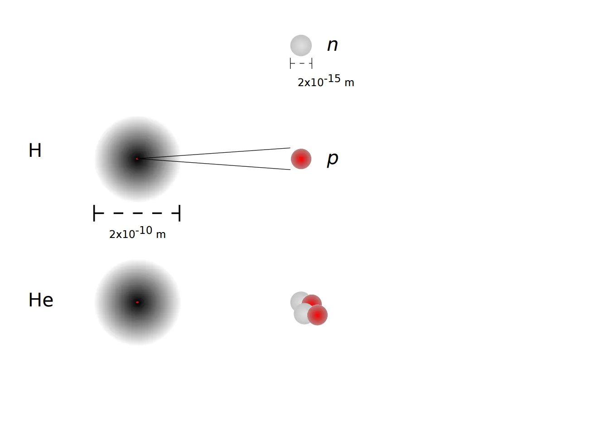
Para «ver» algo de tamaño \(d\) hay que lanzarle una onda de longitud \(\lambda \lesssim d\): la excitación del campo sonda interactúa con los campos del blanco y sale desviada.
Para ver algo más pequeño hace falta más energía.
§ 0.4 · Detectores de neutrinos
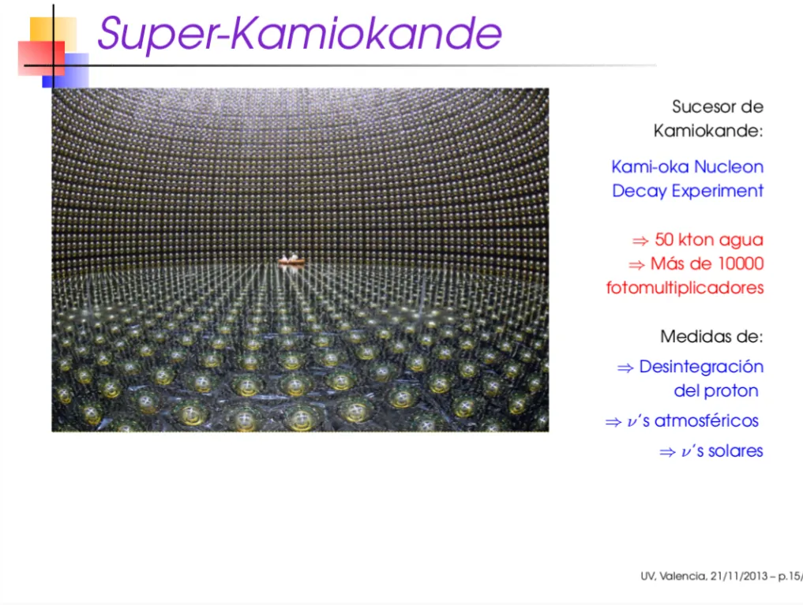
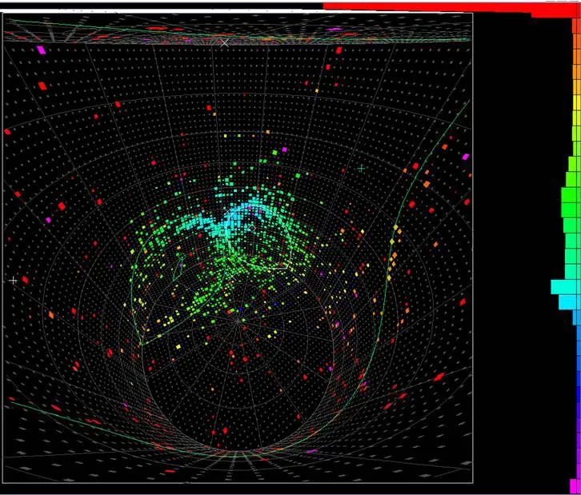
≈ 3800 neutrinos atmosféricos por año: cada punto es un fotomultiplicador que vio luz.
Un tanque de agua bajo una montaña descubrió que los neutrinos oscilan.
§ 0.4 · Detectores de neutrinos
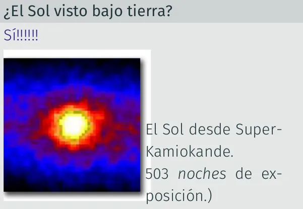
De noche la luz del Sol no llega al detector, pero sus neutrinos atraviesan la Tierra entera casi sin interactuar.
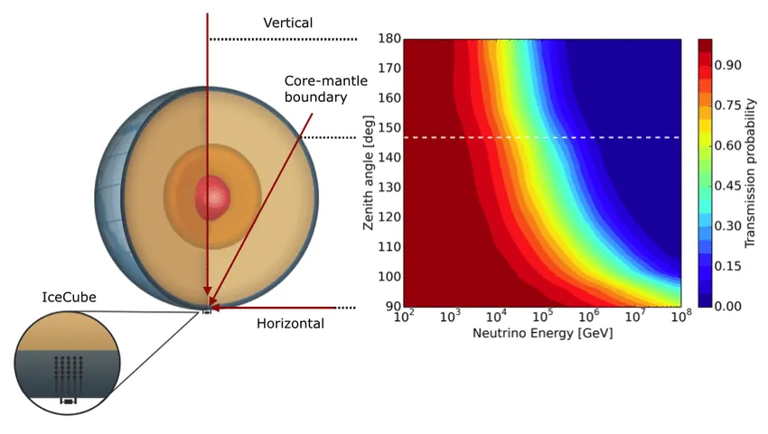
Los neutrinos atraviesan la Tierra: el Sol se «ve» de noche bajo tierra.
§ 0.4 · Detectores de neutrinos
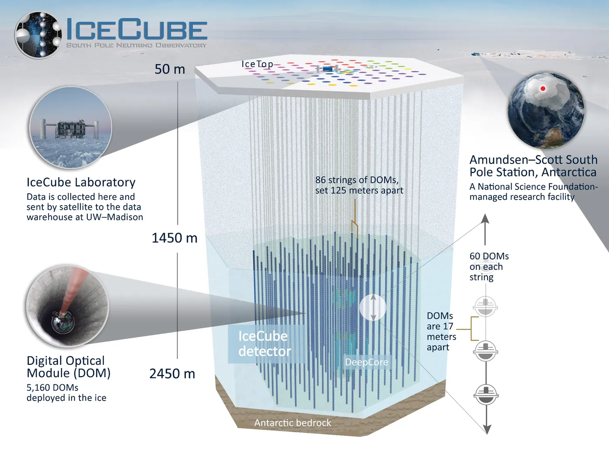
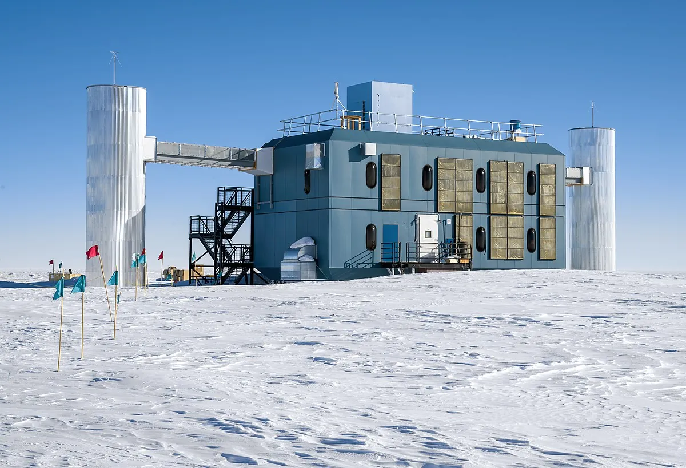
Un neutrino que choca en el hielo produce partículas más rápidas que la luz en el hielo: emiten un cono de luz azul (radiación de Cherenkov) que los módulos registran.
Un kilómetro cúbico de hielo antártico sirve de detector de neutrinos.
§ 0.4 · Detectores de neutrinos
Fermilab (Illinois) produce un haz de neutrinos que viaja en línea recta por dentro de la Tierra hasta Dakota del Sur, donde lo esperan detectores de argón líquido a 1,5 km bajo tierra.
El Instituto de Física de la UdeA es miembro oficial de la colaboración DUNE.
DUNE enviará neutrinos a 1300 km a través de la Tierra.
§ 0.5 · Antimateria
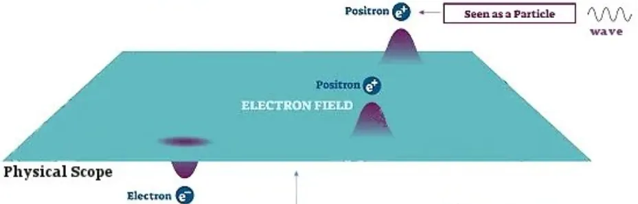
\(E \leftrightarrow M\): con energía suficiente (\(E \ge 2m_e c^{2} \approx \qty{1{,}02}{MeV}\)) un fotón crea un par \(e^{-}e^{+}\); al encontrarse, el par se aniquila en fotones.
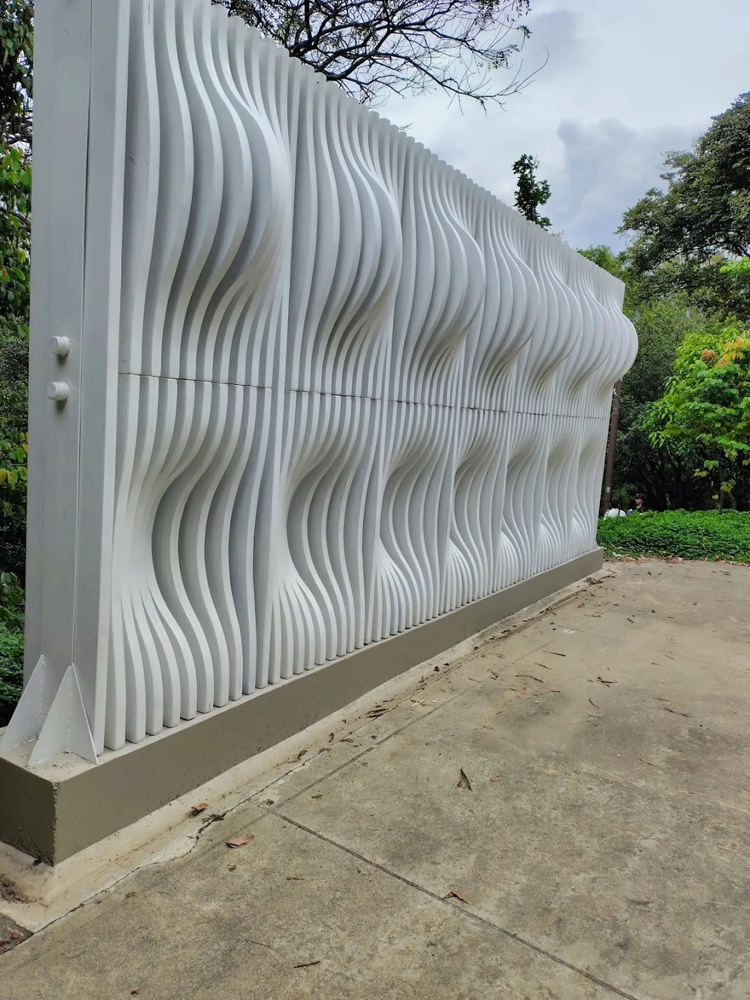
\(e^{+}\)\(e^{-}\)Electrón y positrón son dos excitaciones del mismo campo.
§ 0.5 · Antimateria en el espacio
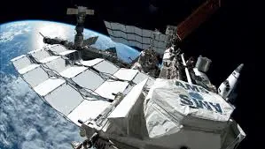
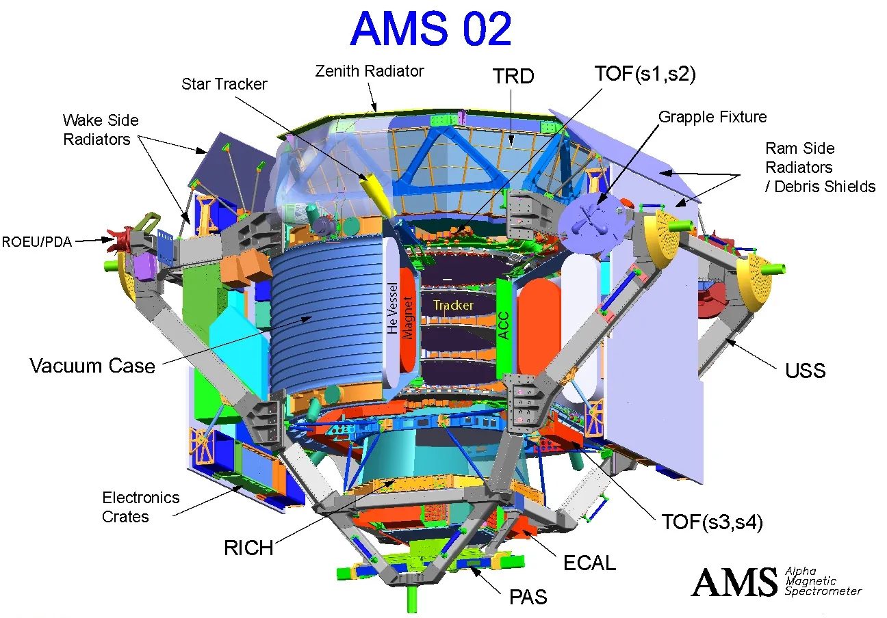
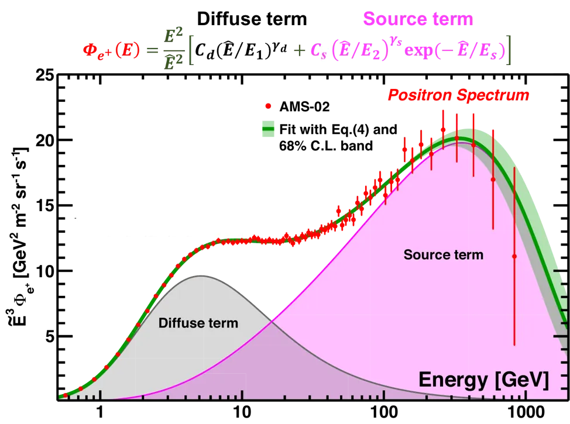
Un término difuso (choques de rayos cósmicos) y un término fuente que se corta cerca de \(\qty{800}{GeV}\): ¿púlsares?, ¿materia oscura?
AMS-02 cuenta antimateria desde la Estación Espacial.
§ 0.5 · Orden de magnitud
La Vía Láctea produce unos \(10^{42}\) positrones por segundo (lo delata la línea de aniquilación de \(\qty{511}{keV}\)); en equilibrio con la aniquilación, en ella flotan \(N \sim 10^{56}\) a \(10^{57}\). Escalamos con el número de galaxias:
\(10^{9}\) = mil millones; \(10^{11}\) = cien mil millones de galaxias.
\(10^{56\text{–}57} \times 10^{11\text{–}12} \approx 10^{67\text{–}69}\): del orden de \(10^{68}\), doce órdenes de magnitud menos que los electrones.
Hay unos 10⁶⁸ positrones frente a 10⁸⁰ electrones: el universo es de materia.
§ 0.6 · Campos cuánticos
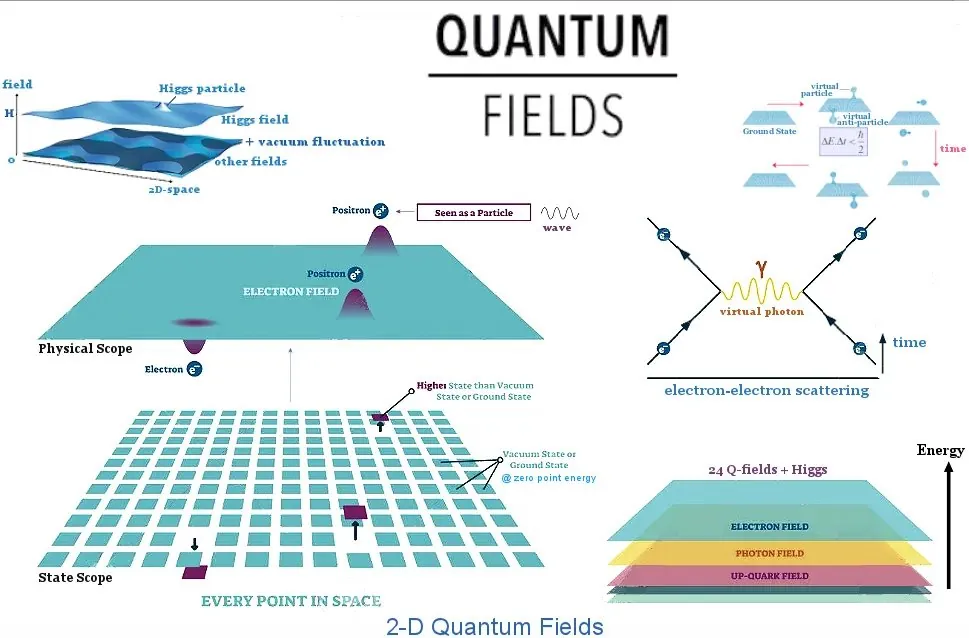
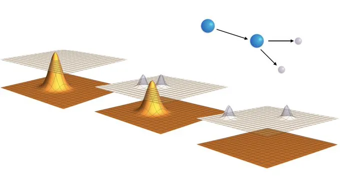
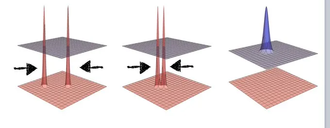
Dos excitaciones que se acercan interactúan; su energía puede pasar a otro campo y crear otra excitación. @martinmbauer
Las excitaciones de los campos se mueven, chocan y crean excitaciones nuevas.
§ 0.6 · Interacción por intercambio
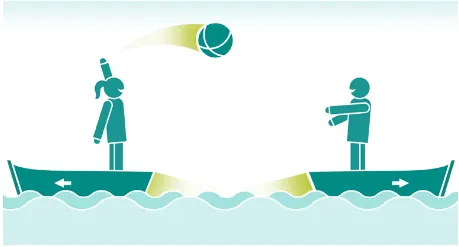
En teoría cuántica de campos dos electrones se repelen intercambiando fotones virtuales: excitaciones del campo electromagnético que no llegan a ser partículas libres. doi:10.25368/2021.71
Las fuerzas son intercambio: lanzar un balón empuja los botes.
§ 0.6 · Momento magnético
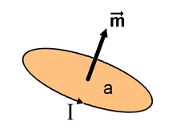
Una carga que gira (una espira, un planeta cargado) tiene \(g_T = 1\). El espín del electrón no es un giro clásico: la ecuación de Dirac predice \(g_e = 2\).
El pequeño exceso sobre 2 viene de correcciones cuánticas (¿de dónde sale?). Medido, \(g_e = 2{,}002\,319\,304\,361\,18(27)\) (el signo menos de las tablas indica que el momento magnético del electrón apunta al revés de su espín): el número más preciso de la física, y la QED lo reproduce sumando diagramas.
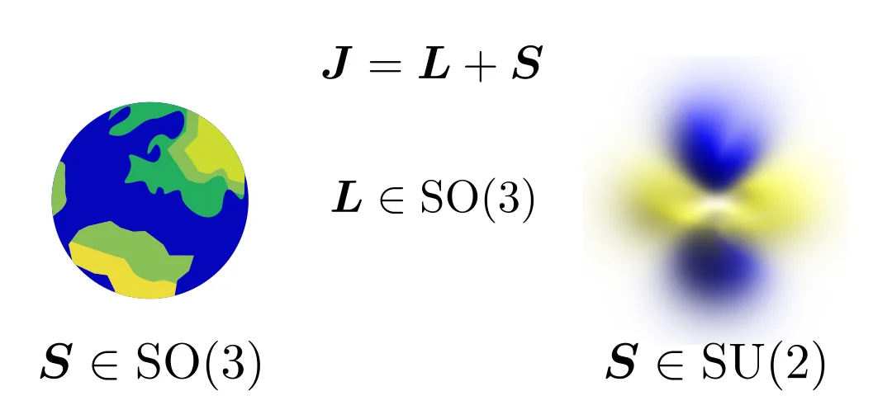
El electrón es un imán dos veces más fuerte de lo que predice un giro clásico.
§ 0.6 · Electrodinámica cuántica
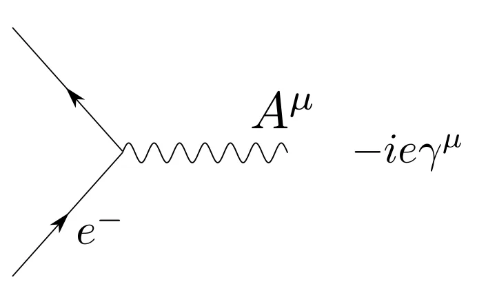
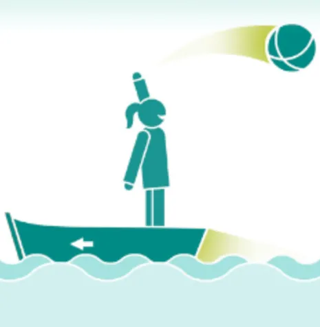
Líneas rectas: campos de materia (electrón). Línea ondulada: campo de radiación (fotón). En cada vértice actúa la carga \(e\), que mide la intensidad de la interacción (la regla exacta).
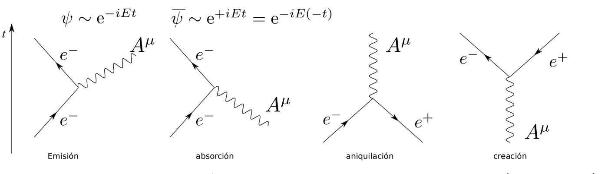
Girando el mismo vértice en el plano \(t\)–\(x\) salen los cuatro procesos. Las partículas avanzan en el tiempo; las antipartículas se dibujan como partículas que van hacia atrás (¿por qué?).
Un solo vértice, girado, da emisión, absorción, aniquilación y creación.
§ 0.6 · Electrodinámica cuántica
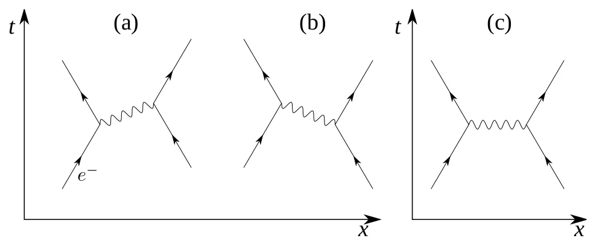
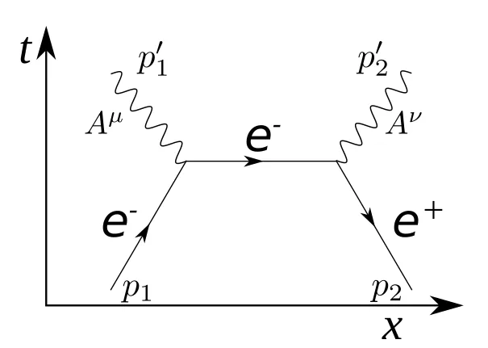
Los procesos se arman uniendo vértices.
§ 0.6 · Correcciones cuánticas
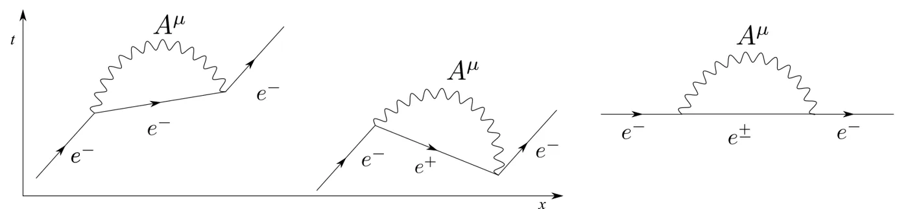
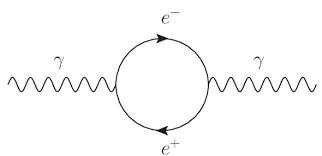
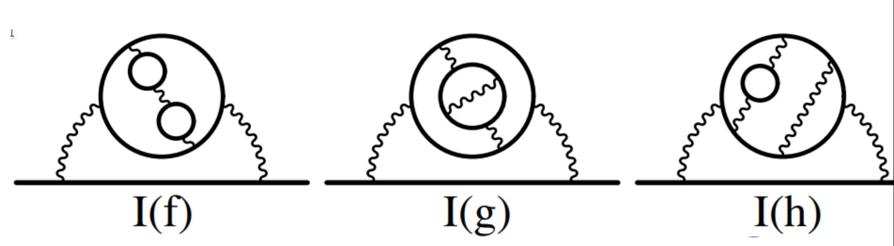
El electrón emite y reabsorbe fotones, y el fotón se abre en pares \(e^{-}e^{+}\) virtuales: cada lazo agrega un factor \(\alpha/\pi \approx 0{,}0023\).
Ver la serie de la QED y sus coeficientes
Sumando diagramas, la teoría acierta 11 cifras del g del electrón.
§ 0.7 · Átomo y luz
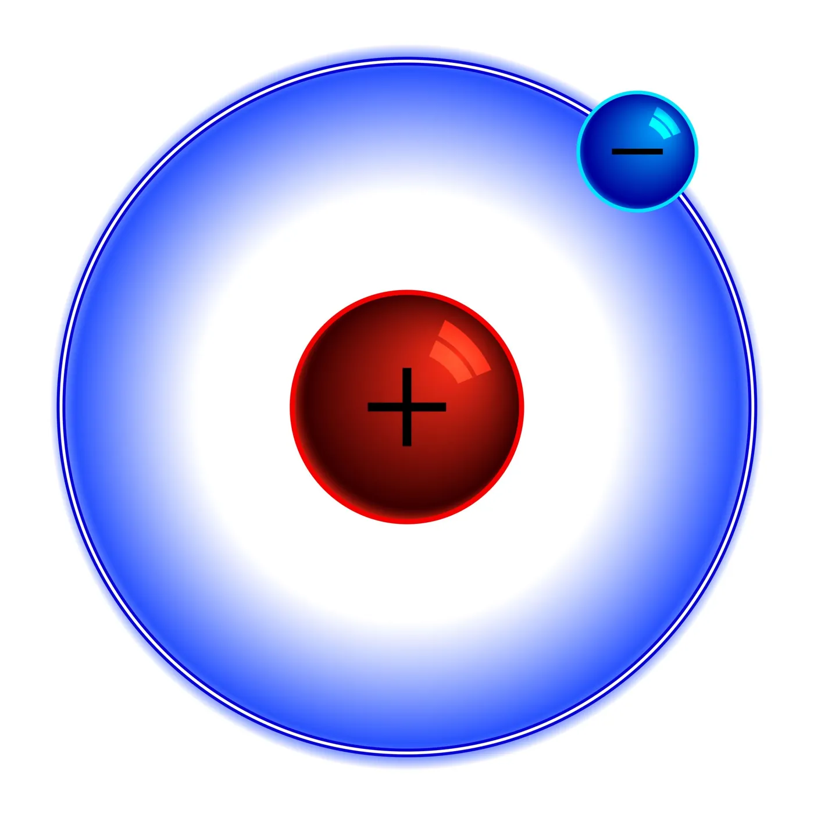
protónelectrón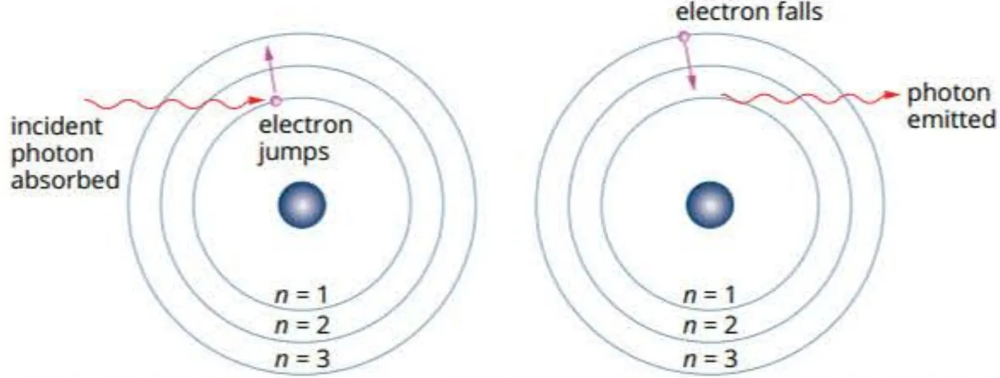
Absorbe un fotón y el electrón salta a un nivel superior; cae y emite un fotón con la diferencia exacta de energía.
Principio de exclusión de Pauli: dos fermiones idénticos no pueden ocupar el mismo estado. Con espín ↑↓ caben dos electrones en \(n = 1\): el ion \(\mathrm{H^{-}}\).
Un átomo absorbe y emite fotones de energías exactas.
§ 0.7 · Unidades de energía
\(h = \qty{6{,}626\times 10^{-34}}{J\,s} = \qty{4{,}14\times 10^{-15}}{eV\,s}\) (constante de Planck), \(c = \qty{3{,}00\times 10^{8}}{m/s}\), \(f\) la frecuencia y \(\lambda\) la longitud de onda del fotón.
| Prefijo | nano | micro | mili | centi | kilo | mega | giga | tera |
|---|---|---|---|---|---|---|---|---|
| Símbolo | n | μ | m | c | k | M | G | T |
| Factor | \(10^{-9}\) | \(10^{-6}\) | \(10^{-3}\) | \(10^{-2}\) | \(10^{3}\) | \(10^{6}\) | \(10^{9}\) | \(10^{12}\) |
El electronvoltio es la unidad natural de energía en el mundo atómico.
§ 0.7 · Niveles de energía
Nivel inicial
Nivel final
Cada salto entre niveles del hidrógeno produce un color preciso.
§ 0.7 · Espectroscopía
Los niveles de cada átomo son únicos; también lo son las líneas que emite o absorbe.
Así se lee la composición de las estrellas sin ir a ellas; el helio se descubrió en el espectro del Sol (1868) antes que en la Tierra.
Y el mismo principio, con la transición más estable que conocemos, define hoy el segundo.
Cada elemento tiene su propio código de barras de luz.
§ 0.8 · Sistema Internacional
Las dos orientaciones del espín del electrón externo respecto al del núcleo difieren en unos \(\qty{3{,}8\times 10^{-5}}{eV}\): la transición emite microondas.
El segundo se define contando oscilaciones de un átomo de cesio.
§ 0.8 · Sistema Internacional
Desde 2019 las unidades se definen fijando constantes de la naturaleza.
§ 0.8 · Unidades naturales
Las constantes de la naturaleza permiten expresar cualquier cantidad física como una energía. Un electrón que atraviesa \(\qty{1}{V}\) gana
Con \(\hbar = c = 1\) el tiempo y la longitud se miden en \(\mathrm{eV^{-1}}\) y la masa en \(\mathrm{eV}\):
| Magnitud | Se mide con | Equivalencia |
|---|---|---|
| Tiempo \([T]\) | \(\hbar/E\) | \(\qty{1}{s} = \qty{1{,}519\times 10^{15}}{\hbar/eV}\) |
| Longitud \([L]\) | \(\hbar c/E\) | \(\qty{1}{m} = \qty{5{,}068\times 10^{6}}{\hbar c/eV}\) |
| Masa \([M]\) | \(E/c^{2}\) | \(\qty{1}{kg} = \qty{5{,}610\times 10^{26}}{GeV/c^{2}}\) |
Un atajo útil: \(\hbar c \approx \qty{197{,}3}{MeV\cdot fm}\), con \(\qty{1}{fm} = \qty{10^{-15}}{m}\), el tamaño de un protón.
Con ħ = c = 1, todo se mide en electronvoltios.
§ 0.8 · Unidades naturales
Tiempos, distancias y masas se pueden expresar como energías.
§ 0.9 · Escala nuclear
| Nivel | Tamaño |
|---|---|
| Cristal | \(\qty{10^{-9}}{m}\) |
| Átomo | \(\qty{10^{-10}}{m}\) |
| Núcleo atómico | \(\qty{10^{-14}}{m}\) |
| Nucleón (protón, neutrón) | \(\qty{10^{-15}}{m}\) |
| Quark | \(\lt \qty{10^{-18}}{m}\) |
La física nuclear estudia las propiedades de los núcleos y las interacciones dentro y entre ellos.
La física nuclear estudia lo que pasa a 10⁻¹⁵ m.
§ 0.9 · Superposición cuántica
El dibujo es plano y ambiguo: tu cerebro lo resuelve como un cubo que sale (cara de abajo a la izquierda al frente) o que entra. Mientras no decides, el dibujo contiene las dos posibilidades.
Superposición: un sistema cuántico está en varias posibilidades a la vez. Al medir aparece una sola, al azar, con probabilidades que la teoría sí predice.
Ojo: es una analogía. La superposición cuántica es más rica (¿en qué falla?).
Antes de medir, varias posibilidades a la vez; al medir, una sola al azar.
§ 0.9 · Entrelazamiento cuántico
Cubo A (aquí)
Cubo B (a años luz)
Dos sistemas entrelazados forman una sola superposición: «ambos salen» + «ambos entran». Al mirar uno, el otro queda definido de inmediato, esté donde esté.
Las coincidencias son del 100 %, pero el resultado de A es al azar: quien mira A no puede escoger qué ve, así que no puede enviar un mensaje a B. El entrelazamiento no permite comunicarse más rápido que la luz.
Einstein lo llamó «acción fantasmal a distancia». Los experimentos le dieron la razón a la mecánica cuántica (¿cómo se sabe?): Nobel de Física 2022 (Aspect, Clauser y Zeilinger).
Entrelazados coinciden siempre, pero al azar: no sirven para enviar mensajes.
§ 0.9 · Interacciones
Fuerza \(= \Delta\vect{p}/\Delta t\): el electrón y el protón del hidrógeno intercambian fotones.
Cambio: la interacción débil convierte un neutrón en protón (\(n \to p\,e^{-}\bar\nu\)).
Masa emergente: casi toda la masa del protón es energía de interacción.
Una interacción produce fuerza, cambio o masa.
§ 0.9 · Interacción → fuerza
Un positrón se puede dibujar como un electrón que viaja hacia atrás en el tiempo (¿por qué?).
Al emitir o absorber un fotón, el electrón cambia su cantidad de movimiento: eso es una fuerza. Dos electrones que intercambian fotones se repelen. Ref.
Emitir o absorber un fotón cambia la cantidad de movimiento: eso es una fuerza.
§ 0.9 · Interacción → fuerza
El fotón se dibuja con dos líneas de carga: una \(-\) hacia el futuro y otra \(-\) de regreso. Una carga que va hacia atrás en el tiempo equivale a la opuesta hacia adelante, \((e^{-})^{*} = e^{+}\) (Feynman–Stückelberg): el fotón es un par \((-,+)\), neutro, pero con la información de la carga.
En cada vértice la carga se conserva. Quien absorbe el fotón cambia su cantidad de movimiento: \(\Delta\vect{p}/\Delta t \ne 0\).
El fotón es neutro, pero lleva la información de la carga.
§ 0.9 · Interacción → cambio
El núcleo intercambia piones: \(\pi^{+}\) y \(\pi^{-}\) cambian la carga (\(p \leftrightarrow n\)); el \(\pi^{0}\) no.
Protón y neutrón son dos estados del mismo nucleón.
§ 0.9 · Interacción → masa emergente
La masa tiene un equivalente en energía (\(E = mc^{2}\)): por eso en física de partículas las masas se dan en \(\mathrm{MeV}/c^{2}\) o \(\mathrm{GeV}/c^{2}\).
La masa del protón es de casi 1 GeV/c².
§ 0.9 · Interacción → masa emergente
Átomo de hidrógeno · tipo sistema solar. Ligadura \(\qty{13{,}6}{eV} \ll m_{\mathrm{H}} \approx \qty{1}{GeV}\): la masa es la de las partes. Electrones de valencia → química.
Protón · tipo gelatina con pasas. Los quarks pesan \(\approx 1\,\%\) de \(m_p\): la masa es energía de ligadura. Quarks de valencia → física nuclear.
La masa del átomo es la de sus partes; la del protón, casi toda interacción.
§ 0.9 · Quarks
| Quark | Carga \(Q\) | Extrañeza |
|---|---|---|
| \(u\) (up) | \(+\tfrac23\) | 0 |
| \(d\) (down) | \(-\tfrac13\) | 0 |
| \(s\) (strange) | \(-\tfrac13\) | \(-1\) |
Pauli: dos fermiones idénticos no pueden ocupar el mismo estado. El \(\Delta^{++} = u{\uparrow}u{\uparrow}u{\uparrow}\) existe: los tres \(u\) deben diferir en otra carga, el color (rojo, verde, azul). Juntos: ¡neutro en color (blanco)!
Tres quarks de colores distintos forman un barión neutro en color.
§ 0.9 · Cromodinámica cuántica
El gluón lleva un color y un anticolor: cambia el color del quark.
| Interacción | Cargas | Campos de radiación |
|---|---|---|
| Electromagnética | 1 | \(1\times 1 = 1\): fotón |
| Fuerte (color) | 3 | \(3\times 3 - 1 = 8\) gluones |
La combinación neutra \(r\bar r + g\bar g + b\bar b\) que se descarta en la QCD es la que sobrevive como fotón en la QED. Con una sola línea de carga no hay cómo recombinar líneas: los fotones no interactúan entre sí; los gluones sí. En lenguaje de grupos: U(1) y SU(3)
Tres colores dan ocho gluones; una sola carga da un fotón.
§ 0.9 · Hadrones
El quark \(s\) (carga \(-\tfrac13\)) es como el quark \(d\) pero más pesado: cada fila hacia abajo agrega un \(s\).
Los hadrones son bariones (tres quarks) o mesones (quark y antiquark).
§ 0.9 · Interacción fuerte
El pión que une a los nucleones es un par quark-antiquark: la «fuerza nuclear» es un residuo de la interacción fuerte entre quarks, como las fuerzas de Van der Waals lo son de la eléctrica.
La fuerza nuclear es un residuo de la interacción fuerte entre quarks.
§ 0.9 · Interacción → masa emergente
La masa del protón es 99 % energía de interacción.
§ 0.9 · El protón por dentro
El protón pesa unas diez veces lo que un pión (\(m_\pi \approx \qty{140}{MeV/c^{2}}\)): su masa la fija la energía del «mar» de gluones y pares quark-antiquark.
Construye tu protón: bit.ly/miproton
Dentro del protón hay un mar de gluones y pares quark-antiquark.
§ 0.9 · El protón por dentro
No hace falta entender los símbolos (qué dice cada parte): el punto es que toda la interacción fuerte cabe en una línea.
Ingredientes: seis masas de quarks y una sola constante de acoplamiento. Nada más.
En la tienda del CERN venden tazas con la ecuación completa del modelo estándar. La del protón es solo una parte.
…y un protón que no cabe en ninguna computadora.
| Año | Hito |
|---|---|
| 1973 | Se escribe la teoría (QCD). Nobel 2004. |
| 1974 | Wilson propone calcularla con computadoras (QCD en red), pero no alcanzan. |
| 2008 | Supercomputadoras obtienen la masa del protón con un error del 2 %. |
Treinta y cinco años para ir de una línea de reglas a un solo número del protón: así de complicado es el objeto que producen.
Reglas simplísimas producen el objeto más complicado que conocemos.
§ 0.9 · El protón por dentro
Cada foto combina cuatro reglas de Feynman de la QCD, sin líneas sueltas. Las combinaciones posibles no tienen límite.
El protón no es ninguna de estas fotos: es todas a la vez (superposición cuántica, como el cubo de Necker). Con más energía hay más resolución y aparecen más gluones y pares.
El protón es una superposición de infinitas configuraciones a la vez.
§ 0.9 · Ciencia ficción
En la serie, una civilización lejana «despliega» un protón, lo convierte en una supercomputadora y usa pares entrelazados para comunicarse al instante: el sofón. Mira el video buscando las dos ideas vistas con los cubos: superposición y entrelazamiento.
Por qué es imposible, entre otras razones:
Pero la pregunta de fondo es real: ¿qué hay dentro de un protón? Es de las más difíciles de la física.
La ficción exagera, pero parte de preguntas reales sobre el protón.
§ 0.9 · Preguntas abiertas
Se esperaba que lo dieran los quarks, pero aportan solo cerca de un 30 % (la «crisis del espín», 1987). El resto: gluones y movimiento orbital.
Nunca se ha visto un quark aislado (confinamiento). La pregunta matemática de fondo es uno de los siete Problemas del Milenio, con premio de un millón de dólares.
En 2010, el hidrógeno con un muón dio un radio de 0,84 fm, más pequeño que el aceptado. Las medidas más recientes apoyan ese valor.
Algunas teorías predicen que se desintegra. Super-Kamiokande lo busca: si ocurre, su vida media supera \(10^{34}\) años.
El Colisionador Electrón-Ión (EIC), en construcción en Brookhaven (EE. UU.), se diseñó para «fotografiar» los gluones del protón.
Aún no sabemos del todo cómo funciona el protón.
§ 0.9 · Gran Colisionador de Hadrones
El Instituto de Física de la UdeA es miembro oficial de la colaboración CMS.
En el LHC chocan protones a casi la velocidad de la luz.
§ 0.9 · Gran Colisionador de Hadrones
Un gluón de cada protón se fusiona: los colores se combinan (azul-antiverde con verde-antirrojo…) y la energía crea partículas nuevas.
Un quark rojo y un antiquark antiverde se aniquilan en un gluón rojo-antiverde.
Si el quark y el antiquark tienen el mismo color y anticolor, pueden aniquilarse en un fotón o en un bosón \(Z\), sin color.
Un \(u\) y un \(\bar d\) (carga total \(+1\)) producen un \(W^{+}\): la interacción débil cambia el sabor.
Cuando chocan dos protones, chocan sus quarks y gluones.
§ 0.10 · Interacción débil
Si solo saliera el electrón, tendría siempre la misma energía. Pauli (1930) propuso una partícula invisible que se lleva el resto: el (anti)neutrino. particleadventure.org
El espectro continuo de la desintegración beta reveló el neutrino.
§ 0.10 · Interacción débil
Como \(m_d - m_u \gt m_e\), un quark \(d\) del neutrón puede bajar a \(u\) emitiendo un \(W^{-}\), que se materializa en \(e^{-}\bar\nu_e\). La carga y el isospín débil totales se conservan.
La interacción débil cambia el sabor: convierte un quark d en u.
§ 0.10 · Interacción débil
La misma interacción débil data fósiles y deja ver neutrinos de reactores.
§ 0.10 · Interacción débil
El muón vive \(\qty{2{,}2}{\mu s}\) en reposo: emite un \(W^{-}\) y queda un \(\nu_\mu\); el \(W^{-}\) da \(e^{-}\bar\nu_e\). Como hay tres cuerpos al final, el electrón sale con un espectro continuo que termina cerca de \(m_\mu c^{2}/2 \approx \qty{53}{MeV}\).
El muón es un electrón pesado que se desintegra en 2 microsegundos.
§ 0.10 · Resumen
Doce partículas de materia, los campos de radiación y el Higgs.
§ 0.10 · Noticia
Falta por descubrir \(\Xi_{ccc}^{++}\) y todos los bariones con algún quark \(b\). LHCb, marzo de 2026
La familia del protón sigue creciendo: el Ξcc⁺ se observó en 2026.
§ 0.10 · Preguntas abiertas
Hay cinco veces más que materia ordinaria y no sabemos de qué campo es excitación.
Casi el 70 % del universo; acelera la expansión y no sabemos qué es.
Las oscilaciones prueban que tienen masa, pero su valor aún no se ha medido.
El big bang debió producir tanta materia como antimateria. ¿Por qué quedó materia?
La relatividad general y la teoría cuántica de campos aún no encajan en una sola teoría.
Electrón, muón y tau son copias con masas muy distintas. ¿Por qué tres, y por qué esas masas?
Son preguntas de investigación de frontera, hoy. Los capítulos que siguen dan las herramientas para empezar el camino.
Las grandes preguntas siguen abiertas: ahí empieza la investigación.
§ 0.10 · Instituto de Física · Universidad de Antioquia
El Instituto de Física de la Universidad de Antioquia es miembro oficial de tres grandes colaboraciones internacionales:
Uno de los dos detectores que descubrieron el bosón de Higgs (2012). Busca materia oscura y física más allá del modelo estándar en los choques de protones.
Interferómetros con brazos de 4 km que detectaron las primeras ondas gravitacionales (2015): fusiones de agujeros negros y de estrellas de neutrones.
Neutrinos a 1300 km a través de la Tierra: el orden de sus masas, la asimetría entre materia y antimateria y las supernovas.
Las preguntas abiertas de este capítulo no son solo de los libros: en el Instituto hay grupos que trabajan en ellas. Pregunta por ellos desde los primeros semestres.
En la UdeA se participa en CMS, LIGO y DUNE.
§ 0.11 · Preámbulo matemático
Para pasar de la descripción a los cálculos hacen falta pocas reglas, pero hay que usarlas siempre igual.
Truco de estas diapositivas: cada fruta representa una expresión cualquiera, tan complicada como se quiera. Las reglas no dependen de lo que haya dentro.
Unas pocas reglas de álgebra bastan, si se usan siempre igual.
§ 0.11 · Manejo de paréntesis
| En palabras | En símbolos |
|---|---|
| Tres quintos de mi edad hace dos años | \(\tfrac35\,(x - 2)\) |
| Tres quintos de mi edad, más dos | \(\tfrac35\,x + 2\) |
\(\{[(\) Es mejor que sobren y no que falten \()]\}\)
La diferencia no depende de \(x\): \(\big(\tfrac35 x + 2\big) - \tfrac35(x - 2) = 2 + \tfrac65 = 3{,}2\).
Los paréntesis cambian el significado: «es mejor que sobren».
§ 0.11 · Operaciones
(a + b)² no es a² + b²: faltan los dos rectángulos 2ab.
§ 0.11 · Fracciones
Ojo: en \(\dfrac{\text{pera} + \text{manzana}}{\text{pera}}\) la pera no se cancela: el numerador es una suma, no un producto.
El objeto que se simplifica puede ser complicado; la regla es la misma:
Solo se cancela lo que multiplica o divide a todo.
§ 0.11 · Fracciones
Cada término de la suma se divide por separado; la pera sola sobre la pera sí da 1.
Con la manzana \(= \dfrac{v_0^{2}\sin^{2}\theta}{g}\), que aparece en el tiro parabólico:
Una suma se divide término a término.
§ 0.11 · Operaciones
El factor de afuera actúa sobre ambos términos del paréntesis: \(k\,(a + b) = k\,a + k\,b\).
El factor de afuera multiplica a cada término del paréntesis.
§ 0.11 · Ecuaciones
La misma operación, a ambos lados, mantiene la igualdad. Ejemplo: \(2x + 5 = 11 \;\xrightarrow{\;-5\;}\; 2x = 6 \;\xrightarrow{\;\times\frac12\;}\; x = 3\).
La misma operación a ambos lados mantiene la igualdad.
Reto Aciertos: 0 / 6
Práctica Aciertos: 0 / 4
Práctica II Aciertos: 0 / 4
Práctica III Aciertos: 0 / 4
Glosario
Glosario II